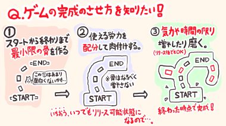

■2021-05-29 (土) 片道勇者2【50】 まずは最小完成へ▼
現在は、例の「完成させる作り方」をもとに、まずは
「最小のスタートからエンドまでの流れ（↓の②番）」を作ろうという
目標に向けて作業しています！
↓

その中でエンディング用の絵も何枚か作成したので、今回はその中から新ネムリ絵をご紹介！

TRPGや、リメイク版への出張版ネムリの頭にだいたい花がくっついてたので、
それにならって2代目ネムリもベールに花が付くことになりました。
その他のデザインなどは1のネムリ（たぶん2ネムリのおばあちゃん）とほとんど同じです。
そういえば特に重要ではない話ですが、実は1のネムリには
体格がけっこういい設定とかありました。
↓
ベスト着てない版の片道勇者1ネムリ。
ネムリが羽織ってるベストは人からジロジロ見られないために
着ているという設定がありました。
【データを考えてみた】
『片道勇者2』はデッキ構築型要素を盛り込むということで、
これまでよりたくさんの種類のスキルが出てくる予定です。
デッキ構築という都合上、1枚がめちゃつよでもあくまで全体のうちの1枚なので、
そう簡単にバランス崩壊しないのが作り手として面白そうな点です。
そんなわけで、今回は「剣士」で試しに実装してみたスキルカードを一部ご紹介！
数値は最終的に調整されそうですが、まずはこんなのをぶっ込んでみて
テストしてみることを考えています。
（カード画像は採用が決まったら描きます）
◆燃える血の刃[アクティブ・サポートカード]
HP5を消費して使用し、5ターンの間、
「物理ダメージ」を「火炎ダメージ」に変換する状態になる。
1枚持ってれば1デッキ回転ごとに5ターン分も火炎ダメージ化できるので、
剣士でありながらけっこう属性攻撃をし続けられるようになるカード。
物理攻撃が通用しにくいスライム対策に1枚持ってると安心。
◆ファイナルストライク[攻撃スキルカード]
武器の耐久度50を使って通常攻撃の20倍（仮）のダメージを与える。
このカード自体に3～5回くらいの使用回数制限がある。
超威力な1枚！ この他に、
「手札に入っていればその間だけ武器耐久を消費しなくなる
サポートカード」 や 「耐久度無限の武器」 なども存在するので、
それと組み合わせて引くことができればほぼノーリスクで撃てる。
「攻撃力アップ」の補助や「クリティカル率アップ」を積んで
最大火力の高い武器で撃てばいい、使い方が分かりやすいカード。
◆バトルステップ [パッシブ・サポートカード]
手札にあるだけで自動的に効果が発動。
[いま手札にある【攻撃スキル】の枚数]×10％（仮）の確率で、
「行動後に追加のターンを得られる」サポートカード。
ついでに確定で回避率＋20％もつく。
デッキのアイテムや経験値などが減ってピンチになるほど
手元に攻撃スキルが来やすくなって追加ターン発生率が上がり、
「ずっと俺のターン！」ができるかもしれないカード。
手札を一時的に増やすカードとの相性は抜群。
と、こんな感じです。
属性変化の「燃える血の刃」、武器消費極大の「ファイナルストライク」などは
従来の『片道勇者』でもギリギリ出せそうな技ですが、
「バトルステップ」みたいな「手札がうまい組み合わせだと強い」系は
デッキ構築システムでしか作れないスキルになりそうで、
また新たな方向性を出せそうです（面白いかはやってみないと分からない！）。
これ以外にももちろんたくさん技のアイデアをリストアップしているので、
今後もちょこちょこ公開していきたいと思います！ お楽しみに！
2021-05-29 (土)  カテゴリ: 片道勇者2
カテゴリ: 片道勇者2
 カテゴリ: 片道勇者2
カテゴリ: 片道勇者2